第1章
初量与终量的比值方法，由此可以证明下述命题
引理1
量以及量的比值，在任何有限时间范围内连续地向着相等接近，而且在该时间终了前相互趋近，其差小于任意给定值，则最终必然相等。
若否定这一点，可设它们最终不相等，令D表示其最终的差。这样它们不能以小于差D的量相互趋近，而这与命题矛盾。
引理2
任意图形Aac E由直线Aa ，AE和曲线ac E组成，其上有任意多个长方形Ab ，Bc ，Cd ，等等，它们的底边AB，BC，CD等都相等，其边Bb ，Cc ，Dd 等平行于图形的边Aa ，又作正方形a Kbl ，b Lcm ，c Mdn 等：如果将长方形的宽缩小，使长方形的数目趋于无穷，则内切图形AKb Lc Md D，外切图形Aalbmcndo E和曲边图形Aabcd E将趋于相等，它们的极限比值是相等比值。
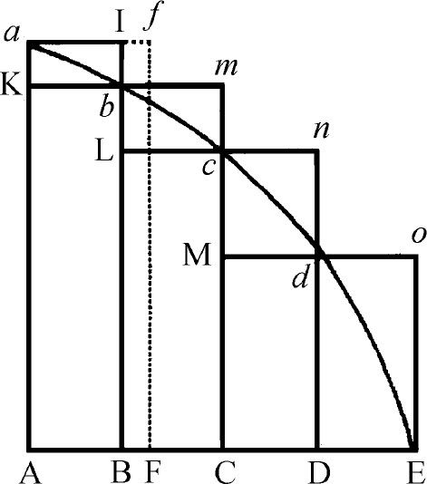
因为内切图形与外切图形的差是长方形Kl ，Lm ，Mn ，Do 等的和，即（由它们的底相等）以其中一个长方形的底kb 为底，以它们的高度和Aa 为高的矩形，也就是矩形ABla 。然而由于宽AB无限缩小，所以该矩形也将小于任何一个给定空间。所以（由引理1）内切图形和外切图形最后趋于相等，而居于其中间的曲线图形更是与它们相等了。
证毕。
引理3
矩形的宽AB，BC，DC等不相等时，只要它们都无限缩小，上述三图形的最终比值仍是相等比值。
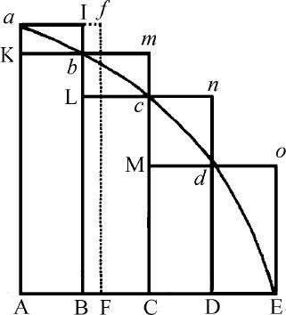
设AF是最大宽度，作矩形FAaf ，它将大于内切图形与外切图形的差。但由于其宽AF是无限缩小的，它也将小于任何给定矩形。
证毕。
推论Ⅰ．所以这些趋于零的长方形其最后总和在所有方面与曲线图形完全一致。
推论Ⅱ．并且，属于这些趋于零的弧长ab ，bc ，cd 等的直线图形最终与曲线图形完全一致。
推论Ⅲ．属于相同弧长的切线的外切图形也与此相同。
推论Ⅳ．所以，这些最终图形（就其外周ac E而言）不是直线图形，而是直线图形的曲线极限。
引理4
如果在两个图形Aac E，Ppr T中有两组内切矩形（同前），每组数目相同，它们的宽趋于无穷小，如果一个图形内的矩形与另一图形的矩形分别对应的最终比值相同，则图形Aac E与Ppr T的比值与该值相同。
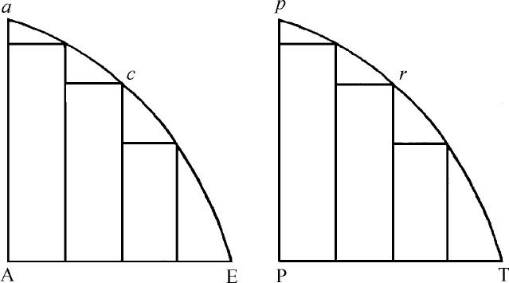
因为一个图形中的矩形与另一个图形中的是分别对应的，所以（合起来）其全体的和与另一个全体的和的比，也就是一个图形比另一个图形；因为（由引理3）前一个图形对应前一个和，后一个图形对应后一个和，所以二者比值相等。
证毕。
推论．如果任意两种量以任意方式分割为数目相等的部分，这些部分的数目增大时，其量值将趋于无穷小，它们各自有给定的相同比值，第一个比第一个，第二个比第二个，以此类推，则它们所有的合起来也有相同的比值。因为，如果在本引理图形中把每个矩形的比视为这些部分的比，则这些部分的和恒等于矩形的和；再设矩形数目和部分的数目增多，则它们的量值无穷减小，这些和就是一个图中矩形与另一个图中对应矩形的最后比值，即（由命题）一个量中任意部分与另一个量中对应部分的最终比值。
引理5
相似图形对应的边，不论其是曲线或直线，是成正比的，其面积的比是对应边的比的平方。
引理6
任意弧长ACB位置已定，对应的弦为AB；在处于连续曲率中的任意点A上，有一直线AD与之相切，并向两侧延长；如果A点与B点相互趋近并重合，则弦与切线的夹角BAD将无穷变小，最终消失。
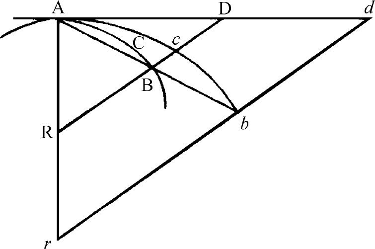
如果该角不消失，则弧ACB与切线AD将含有与直线角相等的夹角，因此曲率在A点不连续，而这与命题矛盾。
引理7
在同样假设下，弧、弦和切线相互间的最后比值是相等比值。
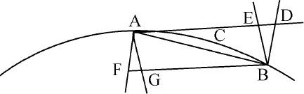
当B点趋近于A点时，设想AB与AD延伸到远点b 和d ，平行于割线BD作直线bd ，令弧Acb 总是相似于弧ACB。然后设A点与B点重合，则由上述引理，角d Ab 消失，因此直线Ab 、Ad （它总是有限的）与它们之间的弧Acb 将重合，而且相等，所以，直线AB、AD与其间的弧ACB（它总是正比于前者）将消失，最终获得相等比值。
证毕。
推论Ⅰ．如果通过B作BF平行于切线，并与通过A点的任意直线AF相交于F，则线段BF与趋于零的弧ACB有最终相等的比值。因为作平行四边形AFBD，它与AD总有相等比值。
推论Ⅱ．如果通过B和A作更多直线BE，BD，AF，AG与切线AD及其平行线BF相交，则所有横向线段AD，AE，BF，BG，以及弦与弧AB，其中任意一个与另一个的最终比值是相等的比值。
推论Ⅲ．所以，在考虑所有与最终比值有关的问题时，可将这些线中任意一条来代替其他。
引理8
如果直线AR，BR与弧ACB，弦AB以及切线AD组成任意三角形RAB，RACB，RAD，而且点A与B相互趋近并重合，则这些趋于零的三角形的最后形式是相似三角形，它们的最终比值相等。
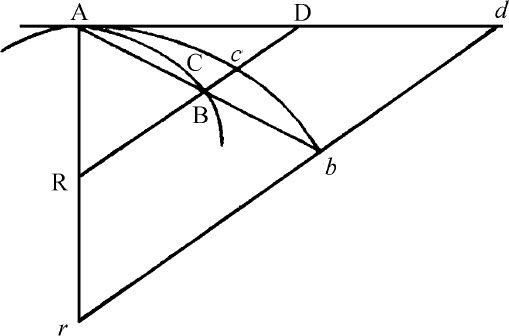
当点B趋近于点A时，设想AB，AD，AR延伸至远点b ，d 和r ，作rbd 平行于RD，令弧Acb 总是相似于弧ACB。再设点A与点B重合，则角b Ad 将消失，所以，三个三角形，r Ab ，r Acb ，r Ad （总是有限的）也将重合，也就是说既相似且相等。所以，总是与它们相似的并成正比的三角形RAB，RACB，RAD相互间也将既相似且相等。
推论．因此，在考虑所有最终比值问题时，可将这些三角形中的任意一个来代替其他。
引理9
如果直线AE，曲线ABC二者位置均已给定，并以给定角相交于A；另二条水平直线与该直线成给定夹角，并与曲线相交于B，C，而B，C共同趋近于A并与之重合，则三角形ABD与ACE的最终面积之比是其对应边之比的平方。
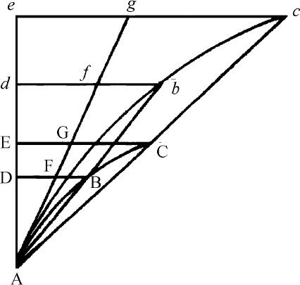
当点B，C趋近点A时，设AD延伸至远点d 和e ，则Ad ，Ae 将正比于AD，AE，作水平线db ，ec 平行于横向线DB和EC，并与AB和AC相交于b 和c 。令曲线Abc 相似于曲线ABC，作直线Ag 与曲线相切于A点，与横线DB，EC，db ，ec 相交于F，G，f ，g 。再设Ae 长度保持不变，令点B与C相会于A点，则角c Ag 消失，曲线面积Abd ，Ace 将与直线面积Afd ，Age 重合，所以（由引理5）它们中一个与另一个的比将是边Ad ，Ae 的比的平方。但面积ABD，ACE总是正比于这些面积，边AD，AE也总是正比于这些边。所以，面积ABD，ACE最终比值是边AD，AE的比的平方。
证毕。
引理10
物体受任意有限力作用时，不论该力是已知的不变的，或是连续增强或连续减弱，它越过的距离在运动刚开始时与时间的平方成正比。
令直线AD，AE表示时间，它们产生的速度以横线DB，EC表示，则这些速度产生的距离就是横线围成的面积ABD，ACE，即，在运动刚开始时（由引理9），正比于时间AD，AE的平方。
证毕。
推论Ⅰ．由此容易推出，在均匀时间间隔内，物体描绘的相似图形的相似部分，其误差由作用于该物体上的任意相等的力产生，并可由物体到相似图形相应位置的距离求得。如果没有那种力的作用，物体应在上述时间间隔内到达那个位置——大致上正比于产生这些误差的时间的平方。
推论Ⅱ．但类似地作用于位于相似图形相似位置上物体的均匀力，其所产生的误差是该力与时间的平方的乘积。
推论Ⅲ．对于物体在不同力作用下所描绘的任何距离都可作相同理解，在物体刚开始运动时，它们都正比于力与时间平方的积。
推论Ⅳ．所以，力正比于刚开始运动时所描绘的距离，反比于时间的平方。
推论Ⅴ．所以，时间的平方正比于所描绘的距离，反比于力。
附注
如果在不同种类的不确定量之间作比较，其中任何一个都可以说成是与另一量成正比或反比，这意味着前者与后者以相同比率增加或减少，或与后者的倒数成正比。如果任意一个量被说成是与其他任意两个或更多的量成正比或反比，即意味着第一个量与其他量的比率的复合以相同的比率或其倒数增加或减少。例如：说A正比于B，正比于C，反比于D，即是说A以与
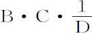
相同的比率相加或减少，也就是说，A与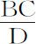
相互间具有给定比值。引理11
在所有曲线的一有限曲率点上，切线与趋于零的弦的接触角的弦最终正比于相邻弧长对应的弦的平方。
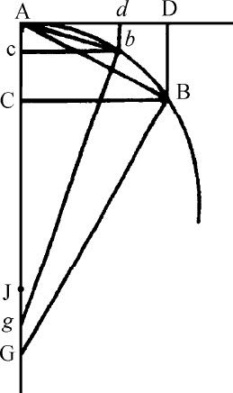
第一种情形：令AB为弧长，AD是其切线，BD垂直于切线，是接触角的弦，直线AB是弧对应的弦。作BG垂直于弦AB，作AG垂直于切线AD，二者相交于G。再令点D，B，和G趋近于点d ，b 和g ，设J为直线BG、AG的最后交点，此时点D，B与A重合，很明显，距离GJ可以小于任何给定的距离，但（由通过点A，B，G和通过点A，b ，g 的圆的特性）
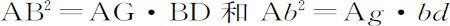
但由于GJ可以小于任何给定的长度，AG和Ag 的比值与单位量的差也可以小于任何给定值，所以，AB2 和Ab 2 的比值与BD和bd 的比值的差也可以小于任何给定值。所以，由引理1，最终有：
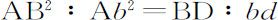
证毕。
第二种情形：令BD与AD夹角的任意给定值，BD与bd 的最终比值仍与以前相同，所以AB2 与Ab 2 的比值也相同。
证毕。
第三种情形：如果角D不曾给定，但直线BD向一给定点收敛，或由任何其他条件决定。则由相同规则决定的角D和角d 仍总是趋于相等，并以小于任何给定差值相互趋近。所以，由引理1，将最终相等。所以，线段BD与bd 的比值仍与以前相同。
证毕。
推论Ⅰ．因为切线AD，Ad ，弧AB，Ab 以及它们的正弦BC，bc 最后均与弧弦AB，Ab 相等，它们的平方最终也将正比于角弦BD，bd 。
推论Ⅱ．它们的平方最终还将正比于弧的正矢，该正矢等分弦，并向给定点收敛，因为这些正矢正比于角弦BD，bd 。
推论Ⅲ．所以，正矢正比于物体以给定速度沿轨迹运动所需时间的平方。
推论Ⅳ．因为
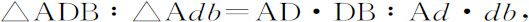
而最后比例：
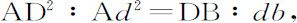
即得到比例式：
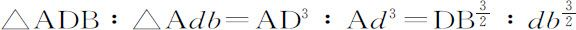
最后也得到：
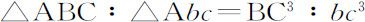
推论Ⅴ．因为DB，db 最终平行于，并正比于AD，Ad 的平方，最后的曲线面积ADB，Adb 将（由抛物线特性）是直线三角形ADB，Adb 的三分之二，而缺块AB，Ab 是同一三角形的三分之一，因此，这些面积与缺块将正比于切线AD，Ad 的平方，也正比于弧或弦AB，Ab 的立方。
附注
不过，我们在所有讨论中均假定相切角既非无限大于亦非无限小于圆与其切线所成的相切角。也就是说，点A的曲率既非无限小亦非无限大，间隔AJ具有有限值，因为可以设DB正比于AD3 ，在此情形下不能通过点A在切线AD和曲线AB之间作圆，所以夹角将无限小于这些圆。出于同样理由，如果能逐次地使DB正比于AD4 ，AD5 ，AD6 ，AD7 等等，我们将得到一系列夹角趋于无限，随后的每一项都无限小于其前面的项。而如果逐次使DB正比于
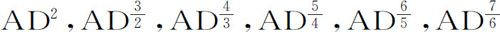
，等等，我们将得到另一系列无限夹角，其第一个与圆的相同，而第二个既为无限大，其后每一项都比前一项无限大。但在这些角的任意两个之间，还可以插入另一系列的中介夹角，并向两边伸入无限，其中每一项都比其前一项无限大或无限小，例如在AD2 项与AD3 项之间，可以插入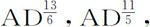
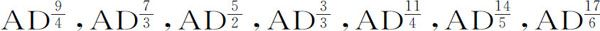
，等等，而在该系列中的任意两项之间，又能再插入一个新的系列，其间相互差别可以是无限间隔。自然是无止境的。由曲线及其围成的表面所证明的规律，可以方便地应用于曲面和固体自身，这些引理意在避免古代几何家采用的自相矛盾的冗长推导。用不可分量方法证明比较简捷，但由于不可分假设有些生硬，所以这方法被认为是不够几何化，所以我在证明以后的命题时宁可采用最初的与最后的和，以及新生的与将趋于零的量的比值，即采用这些和与比值的极限，并以此作为前提，尽我可能简化对这些极限的证明。这一方法与不可分量方法可作相同运用，现在它的原理已得到证明，我们可以更可靠地加以使用。所以，此后如果我说某量由微粒组成，或以短曲线代替直线，不要以为我是指不可分量，而是指趋于零的可分量，不要以为我指确定部分的和与比率，而总是指和与比率的极限，这样演示的力总是以前述引理的方法为基础的。
可能会有人反对，认为不存在将趋于零的量的最后比值，因为在量消失之前，比率总不是最后的，而当它们消失时，比率也没有了。但根据同样的理由，我们也可以说物体到达某一处所并在那里停止，也没有最后速度，在它到达前，速度不是最后速度，而在它到达时，速度没有了。回答很简单，最后速度意味着物体以该速度运动着，既不是在它到达其最后处所并终止运动之前，也不是在其后，而是在它到达的一瞬间。也就是说，物体到达其最后处所并终止运动时的速度，用类似方法，将消失的量的最后比可以理解为既不是这些量消失之前的比，也不是之后的比，而是它消失那一瞬间的比，用类似方法，新生量的最初比是它们刚产生时的比，最初的与最后的和是它们刚开始时或刚结束时（或增加与减少时）的和。在运动尚存的最后时刻速度有一极限，不能超越，这就是最后速度；所有初始和最后的量或比也有极限。由于这些极限是确定的，实在的，所以求出它们就是严格的几何学问题。而可用以求解或证明任何其他事物的几何学也都是几何学。
还可能有人反对，说如果给定将消失量的最后比值，它们的最后量值也就给定了：因此所有量都包含不可分量，而这与欧几里得在《几何原本》第十卷中证明的不可通约量相矛盾。然而这一反对意见建立在一个错误命题上。量消失时的最后的比并不真的是最后量的比，而是无止境减少的量的比必定向之收敛的极限，比值可以小于任何给定的差向该极限趋近，决不会超过，实际上也不会达到，直到这些量无限减少。在无限大的量中这种事情比较明显。如果两个量，它们的差已给定，是无限增大的，则这些量的最后的比也将给定，即相等的比，但不能由此认为，它们中最后的或最大的量的比已给定。所以，如果在下文中出于易于理解的理由，我论及最小的，将消失的，或最后的量，读者不要以为是在指确定大小的量，而是指作无止境减小的量。